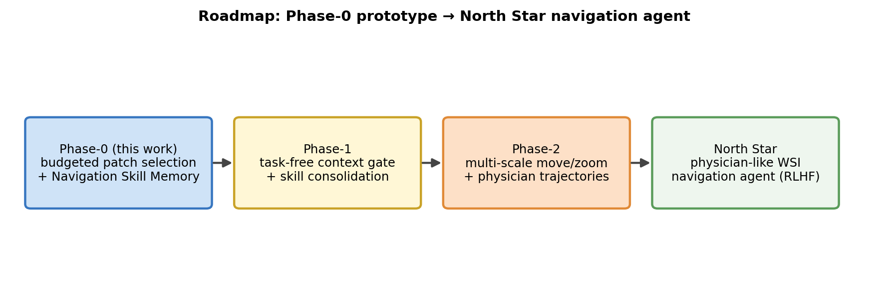

從基調定稿、pilot 完成、雙月報告，到論文初稿（老師 review）與年度報告。
綠色＝主要工作；淺綠＝補強實驗；橘色＝里程碑 / 交付點。
本次交付定位在 Phase 0；後續為長期願景。
QPMIL / CONCH feature 上的 budgeted patch navigation + NSM 持續學習。
doctor trajectory 訓練 action policy（move / zoom）、order-aware reward。
醫師 feedback + feature replay memory + PEFT/LoRA + parameter merging。

outputs/figs/Fig_roadmap.png。